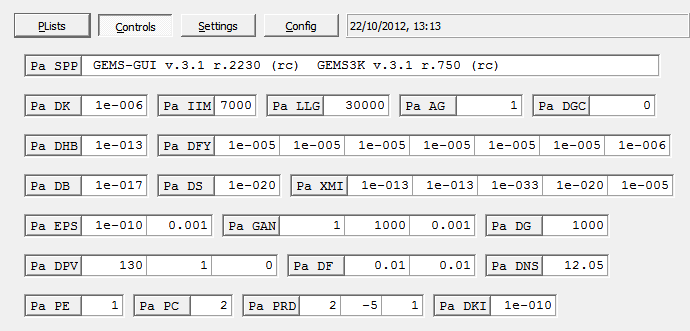

GEMS3K Code for Solving for GeoChemical Equilibria
GEMS3K Code for Solving for GeoChemical Equilibria
GEM Task Data Structure and IPM-3 Kernel Module
Contents
1. The Gem Task (Multi) Data Structure
2. The GEM Algorithm and IPM-3 Kernel Module
2.1. Stage 1:
AIA Procedure
2.2. Stage 2:
MBR Procedure
2.3. Stage 3:
IPM Descent Procedure
2.4. Stage 4:
PSSC Procedure
3.
Numerical Settings to Control GEM IPM-3 Module Operation
4.
Warnings and Error Messages
1. The GEM Task (Multi) Data Structure
The GEM Task ("Multi") data structure is dynamically allocated in
computer memory and keeps all scalars and arrays containing input, work
and output data of the GEM IPM-3 algorithm
used
in calculation of an equilibrium state. Within the GEM-Selektor code,
contents of the Multi
structure can be exported into GEMS3K input files and then used in
standalone coupled code calculations. In the standalone GEMS3K program,
the Multi data structure is created and
filled out by reading DCH and IPM input data files; it remains
intact during the whole runtime of GEMS3K instance.
This manual provides a short overview of the GEM algorithm and IPM-3
kernel program, the main work data in the Multi structure accessible in
Multi: window pages, and describes the numerical
settings that control
the operation of the GEM IPM-3 algorithm.
There are two main modes of operation of GEM IPM-3 kernel: the
"automatic initial approximation" mode (AIA) and the "smart initial
approximation mode" (SIA). In GEMS3K, the operation mode can be set
before every call of GEM
calculation.
The AIA mode always uses the LP simplex procedure to get initial
approximation of the GEM primal solution. In this mode, the MBR and IPM
algorithms
do more iterations, but require no a priori information about the
stable phase assemblage and equilibrium speciation in the system.
The SIA mode needs a previous GEM task solution for the same setup of
chemical system because it avoids the LP simplex step. In most cases,
GEM IPM converges rapidly in this mode with a 10-20 times gain in
computation speed. However, there is no
guarantee that the previous GEM task result is a good initial
approximation for a system with changed bulk composition, temperature,
pressure, or metastability constraints. There is no universal criterion
to check this before performing the whole GEM IPM
calculation; at every step, it may turn out that the initial
approximation was bad, leading to inconsistent results or to divergence
in IPM or MBR numerical algorithm. At any such error condition, the
program will automatically switch to the AIA mode
for this task only. If the mode was
already AIA, the GEM IPM calculation is stopped and an error message is
generated (more...).
2. The GEM Algorithm and IPM-3 Kernel
Program
The operation of GEM IPM-3 module proceeds in four (AIA mode) or
three (SIA mode) main stages, as shown on the flow chart (from Kulik
D.A., Wagner T., Dmytrieva S.V., Kosakowski G., Hingerl
F.F., Chudnenko K.V., Berner U. (2012): GEM-Selektor geochemical
modeling package: Numerical kernel GEMS3K for coupled simulation codes.
Computational Geosciences
(in press), http://dx.doi.org/10.1007/s10596-012-9310-6).
To start calculations, the GEM Task data structure must be correctly
filled out with input data (BCC etc.),
including a feasible initial approximation (FIA) of the GEM primal
solution. FIA is the speciation (i.e. amounts of Dependent
Components)
that is compatible with the equilibrium phase assemblage, mass balance
and metastability constraints, and is close enough to the Gibbs energy
minimum so that the IPM algorithm can reach it and not another (local)
minimum in a strongly non-ideal system. If FIA is available e.g. from a
previously computed equilibrium state in a similar system, the AIA
procedure can be skipped, and calculation proceeds in "Smart Initial
Approximation" (SIA) mode. Otherwise, the IPM-3 algorithm begins from
the AIA procedure in the "cold-start" Automatic Initial Approximation
(AIA) mode.

Stage 1: AIA Procedure
An automatic initial approximation (AIA) must be used in all cases
when the stable phase assemblage or the redox state is going to be
(very) different from the previously computed equilibrium state, or if
the latter is not available. In the generic non-linear GEM problem is
first truncated into a LP (linear programming) subproblem
by cutting off the concentration and activity coefficient terms in
chemical potential expressions for all dependent components. In this
case, each dependent component (species) is treated as a separate pure
phase. This LP sub-problem is then solved using a modified simplex
algorithm with two-side (metastability) constraints. There are two
controls - Pa_EPS[0]
and Pa_GAN[1]
- that influence the precision
and the result of the Simplex calculation, respectively.
The GEM calculation is completed at this point, if no solution
phases (having two or more dependent components) are present in the
chemical system definition. Otherwise, the original non-linear GEM
problem is restored, and the "Fill-out" step is applied. This step
ensures that no thermodynamically stable phases and species will not be
eliminated from the final GEM result, even though their amounts were
set to zeros after simplex LP calculation. The program goes through the
whole primal solution approximation vector and checks each element
against the respective Pa_DFY value.
If the
data element contains a value equal or greater than Pa_DFY
then it
remains unchanged; otherwise the Pa_DFY value is inserted.
Note that this Fill-out procedure makes the mass balance precision
worse and its improvement within the MBR procedure mandatory. Too large
insertion constants in Pa_DFY can result in MBR algorithm
failure,
whereas some DCs can be lost upon GEM IPM descent iterations after too
small fill-out insertions.
Stage 2: MBR Procedure
In order to obtain a FIA before starting the main IPM descent loop,
the mass balance precision must be checked and improved, if necessary
(especially in the AIA mode). This is done within the MBR (Mass Balance
Refinement) procedure that iteratively adjusts some DC amounts in such
a way that the approximation remains in the feasible domain, until any
mass balance residual for i-th
IC
does not exceed a small value bi*
Pa_DHB.
The MBR algorithm tries first to adjust larger amounts of DCs,
if possible. MBR iterations are sensitive to several tolerances - Pa_DHB, Pa_DFY, Pa_DPV - which
also define the final precision of
GEM IPM
results.
Stage 3: GEM IPM Descent Procedure
After successful convergence of MBR, The Main IPM Descent procedure
iteratively adjusts both the primal and the dual solution vectors,
while trying to decrease the total Gibbs energy function of the system
G(X). At each iteration, first the descent-direction
vector is obtained,
then the optimal step length is estimated, and finally the primal
solution approximation is corrected by adding products of descent
direction (gradient) and step length for each DC.
Optionally, after each IPM iteration, the dual solution
approximation (vector u) can
be checked for divergence (as controlled by Pa_LLG tolerance).
This check actually compares how chemical potentials of ICs vary
between IPM iterations. In well-posed chemical systems, such variations
occur rather monotonously, whereas in an ill-defined system (e.g. with
respect to redox state), some chemical potentials may change
erratically because there is not enough internal constraints to fix
them. In this case, the Divergence Detector issues a warning; further
IPM iterations will not improve but worsen the GEM task results.
The minimization problem is considered as solved, when
the calculated value of the Dikin convergence criterion CD becomes
smaller than the Pa_DK tolerance, and
the
maximum allowed total number of IPM iterations Pa_IIM
is not yet exceeded. At each IPM iteration, the
CalculateActivityCoefficients() subroutine is called to update DC
activity coefficients (and optionally electrostatic terms) in
multi-component phases. This calculation is controlled by Pa_AG, Pa_DGC, Pa_PRD settings.
In the course of IPM iterations, some phases and components can be
eliminated (zeroed-off), if their quantities become smaller than the
respective
tolerances in Pa_DS and Pa_XMI fields. Changing these tolerances
beyond recommended limits can strongly affect IPM convergence and
precision of GEM IPM calculation results.
Stage 4: Phase Selection Procedure
After convergence of the Main IPM descent, the control goes to
the PSSC (Phase Selection and Speciation Cleanup) procedure that
calculates stability
criteria for all species and phases, and
checks whether some phases have been lost from the x and
Xa vectors and must be restored. If this was the case, the
control will
go back to MBR Procedure; the whole loop
can be repeated up to up
to five times. Behavior of the PSSC() algorithm mainly depends on the Pa_PC and Pa_DF
controls.
In addition, the mass balance precision of the
GEM IPM result is analyzed using the Pa_DHB,
Pa_GAN, Pa_DPV
controls. For each multi-component phase present in non-zero amount,
the amount of each DC with trivial metastability constraints is checked
for consistency with dual solution (see Pa_GAN[2] and Pa_PRD[1]
tolerances). If an inconsistency is found, it will be corrected and, if
the correction is too strong, the control goes to MBR Procedure again.
3. Numerical Settings to Control GEM
IPM-3 Module
Operation
The data objects listed below control the operation of GEM
IPM-3 kernel program. For the GEMS3K standalone code, these settings
can be changed in the IPM input file. Such a file is usually exported
from a chemical system definition created within the modeling project
in the GEM-Selektor package.
For the standalone GEMS3K program, the numerical settings read from
the IPM
input file remain valid
for the whole duration of the GEMS3K instance in computer memory. If
some entries are not present in the IPM file, they will be set to
default values, shown on this screenshot from GEM-Selektor code:

Note that usually, there is no need to change default numerical
settings. The default values given below
correspond to aqueous systems of 1000 total moles
of independent components in the internal Multi b vector; re-scaling from-to actual
BCC occurs automatically within the IPM-3 kernel program. Ad-hoc
changes of the IPM-3 numerical
controls, especially setting
them beyond the indicated validity intervals, may
cause the program to crash, freeze, or produce meaningless
results. However, some controls must be adjusted for certain types of
systems.
- Pa_DB
- Tolerance for minimum mole amount of Independent Component in the
b vector { 1e-17 }
-
- This cutoff number of moles of IC is used in calculation of the
input bulk chemical composition BCC (vector b)
of
the
chemical system to be solved for the equilibrium state the using
the GEM IPM-3 kernel.
- In
the GEM-Selektor CSD setup recipe calculation,
if
the
calculated
mole amount bi
of i-th Independent
Component is less than Pa_DB, this IC will be automatically
turned off in the CSD and excluded from the (compressed) GEM task data
structure.
- In the GEMS3K program, it is checked that any element bi
of
the input BCC (b) vector is
greater
than or equal to Pa_DB tolerance; if not, this bi
will
be set to Pa_DB value, the warning W20IPM
will be issued, and the GEM calculations will continue.
- Possible values:
1e-8 to 1e-20,
default 1e-17
mol.
- Related warning:
W20IPM.
-
- Pa_DS
- Tolerance for minimum mole amount of stable pure phase present in GEM
primal
solution {1e-20}
-
- The GEM IPM algorithm will automatically eliminate (zero off) the
mole amount of
any pure (single-component) phase in Xa
vector, including all
its species in the primal
solution vector x, if current total
number
of moles of DCs in this phase becomes less than Pa_DS .
- Possible values:
1e-8 to 1e-30 mol, recommended is 1e-20 mol (default).
- Related error:
E13IPM.
- The IPM elimination criteria for special cases (multi-component
phases of different kinds and their species) are given as Pa_XMI
tolerances
described below.
-
- Pa_XMI[0]
- Mole amount tolerance for water-solvent at aqueous phase
elimination{
1e-13 }
-
- The aqueous electrolyte phase will be eliminated (zeroed off) if
the amount of water-solvent goes below this tolerance. Possible
range: 1e-8 to 1e-30 mol.
-
- Pa_XMI[1]
- Mole amount tolerance for the solid sorbent at sorption phase
elimination { 1e-13 }
-
- The sorption phase will be eliminated (zeroed off), if the amount
of solid sorbent goes below this tolerance. Possible range: 1e-8 to
1e-30 mol.
-
- Pa_XMI[2] -
Mole amount tolerance for elimination of solute (sorbate) species {
1e-33 }
-
- This value defines, which DCs in multi-component phases will be
excluded from the the LS set (see Karpov et
al.,
1997). Any element xj in the GEM primal solution
approximation with the amount below this tolerance will be set to zero.
- Possible values:
1e-17 to 1e-99; default value is 1e-33
moles.
- Setting this tolerance to lower values (1e-60 and less) may be
necessary, if some minor species with general activities (lga) in the
range 1e-10 - 1e-15 have zero amounts in the phase present in a
significant amount in equilibrium state. This means that these species
were eliminated at some early iterations of IPM and have not been
restored in the Speciation Cleanup procedure (perhaps because it has
been deactivated).
- Pa_XMI[3] -
Mole amount tolerance for elimination of solution phases other than
aqueous { 1e-20 }
-
- This value defines, which non-aqueous multi-component phases will
be excluded from the mass balance if their amounts in the Xa vector fall below this tolerance after
some IPM Main Descent iteration.
- Possible range:
1e-8 to 1e-30 mol, recommended is 1e-20 mol
(default), the same as in Pa_DS.
-
- Pa_XMI[4] -
Tolerance for the effective molal ionic strength to calculate
aqueous activity coefficients { 1e-5 }
-
- Calculation of activity coefficients of aqueous species is
performed only when the effective molal ionic
strength IS
is not less than this value.
- Otherwise, the internal activity coefficients will be set to 1.0
regardless of the used aqueous model.
- Possible range:
1e-3 to 1e-10; default 1e-5.
-
- Pa_DHB
- Maximum allowed relative mass balance residual for Independent
Components { 1e-13 }
-
- This tolerance defines a relative value of mass balance residuals
for all independent components that must be reached in the Mass Balance
Refinement (MBR) step and maintained by the Main IPM Descent step of
the GEM algorithm. Actually, this is the tolerance for the convergence
criterion of the MBR algorithm for entering the feasible domain of the
initial approximation of GEM primal solution (more...)
- Possible values:
1e-10 to 1e-15, default is 1e-13 (for a system of 1000 total moles in
BCC).
- Related error conditions:
E02IPM; W09IPM;
E10IPM.
- Exact application of this tolerance within the MBR
procedure depends on the Pa_DPV[2] control
parameter. Maximum allowed number of MBR iterations can be set in Pa_DPV[0]; reaction of the program on reaching
this number of iterations is defined by a flag in Pa_DPV[1].
- Pa_DFY[0] -
Insertion mole amount for water-solvent in the AIA Fill-Out procedure {
1e-5 }
-
- This and following controls are used in the Fill-Out procedure,
which is applied immediately after obtaining the AIA LP simplex initial
approximation y of the GEM primal
solution
(more...). Separate insertion
constants may be applied to components of certain phase types (see
below).
- This must be done because to obtain a LP simplex initial
speciation, each Dependent Component is temporarily considered as a
separate pure phase; according to Gibbs phase rule, the number
of non-zero quantities of such phases in isobaric-isothermal
equilibrium cannot exceed the number of Independent Components.
- In a real chemical multi-system containing aqueous and several
other
multi-component phases, much more dependent components may be present
in
positive quantities at equilibrium, but it is not known at the
beginning, which of them will be present in significant amounts.
- For this reason, the Fill-Out procedure is applied on each
element of the y vector: If yj
< Pa_DFY then yj is set equal
to Pa_DFY. This procedure actually violates the mass balance that must
be improved in the MBR procedure to make sure that the initial
appeoximation lies within the 'Fesible Domain'.
- Magnitudes of Pa_DFY insertion values
have a major impact on the convergence of the MBR procedure and on the
whole GEM task calculation result.
- Too low values may lead to missing solution phases or some
components in them, which may render the GEM task solution infeasible.
- Too large
Pa_DFY values may prevent MBR algorithm convergence and cause
persistent errors E04IPM or E05IPM.
- Possible values:
1e-4 to 1e-7, default is 1e-5 (for a system of 1000 total moles in
BCC).
-
- Pa_DFY[1]
- Insertion mole amount for aqueous species in the AIA
Fill-Out procedure { 1e-5 }
-
- Pa_DFY[2]
- Insertion mole amount for species of ideal solutions in the AIA
Fill-Out procedure { 1e-5 }
-
- Pa_DFY[3] -
Insertion mole amount for a major species in a solution in the AIA
Fill-Out procedure { 1e-5 }
-
- Pa_DFY[4] -
Insertion mole amount for a junior species in a solution in the AIA
Fill-Out procedure { 1e-5 }
-
- Pa_DFY[5] -
Insertion mole amount for a single-component phase in the AIA Fill-Out
procedure { 1e-5 }
-
-
- Pa_DFY[6]
- Insertion mole amount for a single-component phase in
the PhaseSelection procedure { 1e-7 }
-
- In the Phase Selection procedure (more...), a phase can be
detected that is not present in positive amount in Xa vector, but shows a significant
positive value of the phase stability criterion in the Fa vector. In this case, the amounts
of all DCs components will be set to this insertion value, and the
control goes to MBR procedure and then again to the main IPM Descent
algorithm. Because the primal solution is very close to reality
in this case, much lower insertion constants will be tolerated in
comparison with the AIA Fill-Out procedure.
-
- Pa_EPS[0] -
Tolerance of the mass balance for the LP simplex solver convergence {
1e-10
}
-
- This criterion defines the desired absolute mass balance
precision for
the LP simplex calculation of the automatic initial approximation
(AIA).
- Too low tolerances may cause
persistent E01IPM errors.
- Possible values:
1e-7 to 1e-14, default is 1e-10 (for a system of 1000 total moles in
BCC).
- Usually there is no need to adjust this
tolerance.
-
- Pa_EPS[1] -
Tolerance for calculation of the surface activity coefficient terms
(SACT) for
surface species
{ 1e-3 }
-
- This is an experimental value for smoothing the stiff numerical
behavior of SACT at high surface coverages.
- In most cases, the value between
1e-4 and 1e-2 should be sufficient (under
construction).
- Pa_GAN[0] -
Fictive
activity coefficient for a major (M) species in a solution phase, used
only in AIA LP simplex calculation { 1 }
-
- This value can usually be set to 1.
- Possible values:
0.0001
to 1.
- See also comments for Pa_GAN[1] below.
- Pa_GAN[1] - Fictive
activity
coefficient
for a minor (J) species in a solution phase, used only in
AIA LP simplex calculation { 1000 }
-
- The Pa_GAN[1] and perhaps Pa_GAN[0] controls are important for
highly positively non-ideal
solution systems that may potentially produce miscibility gaps
(see "/Resources/doc/pdf/ActivityCoeffs.pdf" documentation file for
details).
- In this case, two or more phase definitions for a given
solution model must be included in the system setup. The initial
approximation must be chosen within the miscibility (single-phase)
region for each possible
phase. If the initial approximation is chosen in the middle of the
miscibility gap, the GEM algorithm will converge to an incorrect
metastable single-phase solution (the same as if only one solution
phase definition would have been included in the system).
- In the AIA mode, this means that some end members must be
temporary made less
stable at the step of LP simplex initial approximation. In the Phase
definition and in the GEMS3K kernel program, this
is achieved by denoting such end members as "junior" 'J', and those
that
should not be suppressed - as "major" 'M'.
These codes result in automatic insertion of ln(PA_GAN[1]) for
'J' and ln(PA_GAN[0]) for 'M' end members into lngmf_ input data vector, then copied
into the lngmf input data vector in
the GEM task data structure.
- Before starting the LP simplex procedure, the molar Gibbs
energy
values G0 (in dimensionless ln a scale) of DCs are automatically
corrected by adding the respective lngmf
values. These
corrections are automatically removed after the LP simplex calculation
is finished, the mixing models are restored, and the control goes to
Fill-Out and then MBR procedures.
- Possible values:
10 to 100000, default
1000.
-
- Pa_GAN[2]
-
Threshold for primal-dual normalized chemical potential difference used
in Speciation Cleanup
{ 1e-5 }
-
- In all multi-component phases present in the primal solution in
positive amounts, the Speciation Cleanup procedure compares the amounts
of DCs in the primal solution vector x
with their amounts restored using the dual solution vector u and DC chemical formula (more...). The comparison
is done by calculating the difference of primal (v) and dual (Fx)
chemical potential (in dimensionless scale); if for j-th DC this
difference is greater than this threshold, then the xj value
is
replaced by that XUj
restored from the dual solution, if the correction is not too strong,
e.g. log10(|XUj - xj|) does not exceed the
Pa_PRD[1] threshold.
- Possible values:
0.001 to 1e-7 (default 1e-5). See also Pa_PRD[1]
control.
-
- Pa_DG -
Total number of moles used in internal re-scaling of the GEM task
system { 1000 }
-
- Most numerical settings of the GEM IPM algorithm must be slightly
adjusted if the size (mass) of the system changes significantly. In
order to allow more accurate settings that ensure the most stable
optimal convergence of IPM, the GEM task is automatically re-scaled to
total number of moles in the b vector
equal to that given in this control setting. When the GEM IPM
calculation is finished, the results (i.e. all extensive properties of
the system, phases and components) are automatically re-scaled back to
the original size of the system from the CSD.
- Possible values:
0.001 to 10000, default 1000.
- At large Pa_DG values, take care that the amount of any DC after
up-scaling does not exceed 0.999999e6 moles (the trivial
metastability constraint from above).
- Note that default values of other numerical settings in this
document correspond to the default value of Pa_DG = 1000. If this value
is changed, many settings may need to be re-adjusted to achieve optimal
convergence and precision of GEM IPM algorithm.
- Pa_DPV[0]
- Maximal number of iterations allowed in the Mass Balance Refinement
procedure { 130
}
-
- This setting defines a maximum number of MBR iterations.
- If the procedure did not converge
until this control has been reached, the error condition E04IPM is activated, which declares that the IPM
feasible domain cannot be entered at the requested mass balance
accuracy, as defined by the Pa_DHB
threshold.
- Most chemical systems require 1 to 6 iterations,
but some systems with many non-ideal phases need 300 iterations or
more.
- Possible values:
10 to 1000, recommended value: 15, default
value: 130.
-
- Pa_DPV[1]
- Activate (1) of disable (0) the E04IPM error
condition on maximum
number of MBR iterations {
1 }
-
- If the error condition is activated (set to 1), and MBR
procedure did not converge in Pa_DPV[0] iterations, the error E04IPM is
issued and the GEM task calculation stopped, declared as failed.
- If the error condition is disabled (set to 0) then the control
goes to IPM Main Descent procedure, even if the MBR procedure did not
converge properly, with the risk of the IPM Descent
failure.
-
- Pa_DPV[2]
- Mode for applying the tolerances to mass balance residuals in the MBR
procedure { 0 }
- This setting defines how relative mass balance residual
tolerances
(see Pa_DHB) will be applied to ICs present in
large amounts in the BCC (b vector) in the Mass Balance
Refinement (MBR) procedure.
- If this setting is 0 (default) then the MBR procedure will try to
satisfy relative tolerances for all ICs mass balance residuals (Cb) regardless of their amounts in the b vector.
- If this setting is +1 or -1 then Pa_DHB value will be interpreted
as relative or absolute tolerance for the residuals. This means that
MBR iterations continue if at least for one ICs except charge 'Zz', the
residual exceeds Pa_DHB or exceeds bi*Pa_DHB. Sometimes
using this mode leads to better precision for major elements such as H,
O, Si, Ca, Mg etc. in aquatic and rock systems.
- If this setting is +2, -2, +3, -3, ..., +12, -12 then the
residuals are checked only against the absolute tolerance equal to 10|Pa_DPV[2]|
instead of Pa_DHB. This corresponds to absolute criteria used in early
versions of Selektor code.
- Possible values:
integer, 0 (default); +1, -1 to +12, -12.
- Related error conditions:
W09IPM; E10IPM; E09IPM.
-
- Pa_LLG
- Tolerance for checking divergence in the GEM dual solution between
IPM iterations { 13000 or 0 (disable) }
-
- In certain chemical systems, some
chemical potentials are not well constrained by physically significant
amounts
of relevant chemical species. This leads to indefinite values of some
IC chemical potentials in the dual solution vector u and numerically stiff behavior in GEM IPM
iterations. The resulting IPM solution may strongly depend on the
chosen
values of numerical tolerances and on the parameters of smoothing (more...). Therefore, early
detection of such divergence saves time and helps identify problems
with the setup or composition of the system. The detection is performed
within the Check-uDD algorithm, starting from 2nd IPM Main Descent
iteration. The Check_uDD procedure actually monitors how strongly
chemical potentials of ICs change between IPM iterations (more...) by means of calculating
moving averages of ui values over 3 IPM iterations for each
i-th IC (see uc).
- This tolerance is used for finding ICs that exhibit too large
variations of chemical potential. There are two modes: one, set by
negative value of Pa_LLG, checks that the absolute difference of moving
average for this and previous IPM iteration is not greater than -Pa_LLG
* Psi_DK[0]; another, set by
positive Pa_LLG, checks that the absolute difference of moving average
differences for iterations r (this), r-1 and r-2 is not greater than
Pa_LLG * Psi_DK[0].
- If a divergence is detected then the symbol of IC is added
to the list in the warning W14IPM, and the
warning is issued after all ICs have been checked.
- Possible values:
- 0 - disables the divergence
detection (in stiff systems, failure of GEM IPM algorithm may occur);
- 32001 or -32001 - enables
divergence detection in the respective mode, but blocks the warning
message (to export data for plotting changes in the dual solution on
IPM iterations at Pa_PRD[2] = 3);
- other values between 1 and
32000 or -1 and -32000 enable the divergence detection and warning
W14IPM.
- Default value: 13000.
-
- Pa_DF[0]
- Tolerance DF for the stability index (logSI >= DF) or Karpov
criterion (|Fa| >= DF) for a lost stable phase to be inserted { 0.01
}
-
- This numerical tolerance is used after
the main IPM descent in the Phase Selection procedure to check
stability of all pure (single-component)
phases
absent from the system mass balance. A k-th phase is declared stable,
if all its components have only trivial metastability constraints; its
amount Xa[k] is greater than or equal
to 0; its stability index Fa[k] is
greater than 0 but less than or equal to Pa_DF[0].
- If a phase has Xa[k] = 0 and Fa[k] > Pa_DF[0], this means
that this is phase is stable, but IPM has lost it from the mass
balance. DCs in this phase will be inserted in Pa_DFY[6] amounts; after
checking of all phases is finished, the MBR + IPM loop will be repeated
up to 5 times. If the situation persists then the stability
and/or stoichiometry of this phase has to be checked.
- Recommended value:
0.01. In many internally consistent and non-stiff
systems, a tighter tolerance of 0.001 can be used.
- Related error conditions: W08IPM;
E04IPM.
-
- Pa_DF[1]
- Tolerance DFM for the stability index (logSI <= -DFM) for a
present unstable phase to be eliminated { 0.01 }
-
- This numerical tolerance is used after
the main IPM descent in the Phase Selection procedure to check
stability of all
phases present in the system mass balance. A k-th phase is declared
stable, if all its components have only trivial metastability
constraints; its amount Xa[k] equals to
0; its stability index Fa[k] is less
than -Pa_DF[1].
- If a phase has Xa[k] > 0 and Fa[k] < Pa_DF[1], this means
that this is phase is unstable, but IPM did not eliminate it from
the mass balance. Amounts of DCs in this phase will be set to zero;
after checking of all phases is finished, the MBR + IPM loop will be
repeated up to 5 times. If the situation persists then the stability
and/or stoichiometry of this phase has to be checked.
- Recommended value: 0.01.
- Related error conditions: W08IPM;
E04IPM.
-
- Pa_DNS -
Default reference density of surface species at standard state {
12.05 nm-2 }
-
- Set to 12.05 nm-2 (as defined in Kulik,
2002) (under construction).
- Pa_DK
-
Tolerance threshold for the Dikin criterion CD of IPM convergence {
3e-6
}
-
- This tolerance (copied to Psi_DK[1])
is compared with the current value of Dikin criterion (Psi_DK[0]) at each IPM iteration in
order to decide whether the IPM Main Descent
minimization procedure has converged (more...).
- Possible values:
1e-3 to 1e-9; values between 1e-6 and 1e-5 are recommended in most
cases.
- Too small
tolerance (< 1e-7) may cause dramatic increase in the number of GEM
IPM iterations or a non-convergence of the IPM algorithm.
- Related error condition:
E06IPM.
- The tolerance Pa_DK is given here for systems of approximately
1000 total moles in the BCC vector (see Pa_DG
setting). The optimal Pa_DK value will be different for systems of
significantly different size.
-
- Pa_IIM
- Maximum allowed number of
iterations
in one GEM IPM Main Descent run { 7000 }
-
- If this number is exceeded, the program
assumes that IPM convergence is not achieved and the GEM task has
failed.
Possible values: 20 to 9999, default (recommended) value is 7000
(needed to resolve highly non-ideal systems in the vicinity of critical
points).
- Convergence of IPM also
strongly depends on the selected Pa_DK
tolerance value and on the smoothing parameters (Pa_AG, Pa_DGC).
- Usually in aquatic systems, the IPM algorithm converges in 20 to
130 iterations in the AIA (LP simplex
automatic initial approximation) mode, or in 0 to 30 iterations in the
SIA (smart initial approximation) mode, when a previous
GEM IPM result for this system setup was used as an initial
approximation.
- Note that in the SIA case, the correctness of IPM results are not
guaranteed if the
input
bulk composition or temperature were changed so that some new phases
must appear in the equilibrium state.
- The SIA mode uses a number of criteria and IPM
error conditions to obtain a correct GEM IPM solution by automatically
switching to AIA mode, whenever
necessary.
- Related error condition:
E06IPM.
-
- Pa_AG
- Smoothing parameter AG for excess chemical potential increments (-1
to +1) { 1; -1.0 or 0.7 for adsorption }
-
- In some highly non-ideal systems, the IPM convergence may not be
achieved due to rather strong dependence of excess part of DC chemical
potentials on the phase composition. Therefore, smoothing of the excess
part (composed from ln(gamma) terms) may be necessary before adding it
to the primal chemical potential. In GEM-Selektor, three smoothing
functions are available.
- One smoothing function uses the logarithmic distance between the
current index of IPM
iteration IT and the maximum allowed number of iterations IIM in Pa_IIM.
This function
has the form
- SF= DGC + ( AG - DGC )
/ ( 1. + exp( log(1/IIM) - log(1/IT ) /
DGC ) + exp( log( 1. - AG ) + log(1/IT) ).
- This function will be invoked when Pa_AG <= -0.0001 and Pa_DGC
>
-0.0001 (internally, the sign of AG is inverted to positive). The SF
(smoothing factor) value will be truncated to 1.0 if it exceeds 1.0.
Example: set Pa_AG to -1 and Pa_DGC to 0.7.
- Another smoothing function uses the logarithmic distance
between the current Dikin criterion CD (Psi_DK[0])
and the convergence
threshold given in Pa_DK.
- SF = DGC + ( AG - DGC ) / ( 1. + exp(
log(DK) - log(CD) ) / DGC )
+ exp( log( 1. - AG ) + log(CD) ).
- The SF value will be truncated to 1.0 if it exceeds 1.0. This
function is invoked when both Pa_AG and Pa_DGK are set less than
-0.0001 (internally, both will have the sign inverted to positive).
Example: set Pa_AG to -1 and Pa_DGC to -0.7; this gives very good
convergence of IPM in systems containing highly non-ideal solid
solutions, even without global IPM refinement loops (see Pa_PRD[1]).
- For both functions, Pa_AG should usually be set to
-1.0. If |AG| is set less than 1.0 then the smoothing will effectively
begin
after
several IPM iterations.
- The third (old) smoothing function is retained mainly for surface
complexation models with Langmuir-type surface activity coefficient
terms. It has the form
- SF = AG * ( 1 -
pow(1-exp(-DGC*IT),60)).
- If SF < 1e-6 then SF is set to 1e-6. After ca. 50th
iteration, the value of smoothing factor SF will be decreased down to
1e-6 more or less steep upon iterations, depending on the Pa_DGC value.
This function is chosen when 0.0001 < Pa_AG < 0.9999 and 0.0001
< Pa_DGC < 0.1. Typical setting for adsorption models: Pa_AG =
0.7 and Pa_DGC = 0.07.
- Setting Pa_AG to 1 and Pa_DGC to 0 disables smoothing.
Default value of Pa_AG is 1.0.
- Related error condition:
E06IPM.
-
- Pa_DGC
- Smoothing parameter DGC - smoothing function exponent (-1 to
+1) { 0; -0.9 or 0.07 for adsorption }
-
- This empirical parameter controls how strongly the smoothing
parameter (Pa_AG)
will
be
decreased as function of the number of
performed IPM
descent iterations. Possible values:
- 0 (smoothing is disabled if also Pa_AG
is set to 1);
- 0.0001 to 0.9999 (or -0.9999 to
-0.0001) to enable smoothing.
- Default value: 0. Too high or to low values may cause
non-convergence of GEM IPM in highly non-ideal systems and especially
in systems with sorption phases.
- In some smoothing functions (see Pa_AG above), the
DGC parameter defines the smallest value of the smoothing factor SF
reached when the IPM Dikin criterion CD becomes equal to Pa_DK,
or
the
number
of IPM iterations IT approaches Pa_IIM.
- In these cases, DGC should be set (in absolute value) between
0.0001
and Pa_AG. To invoke these new functions, just invert the sign of Pa_AG
to negative (in the second function, also Pa_DGC to negative).
- Attention: for surface complexation models, provisionally the old
smoothing function with Pa_AG = 0.7 and Pa_DGC = 0.07 must be used.
- Related error condition:
E06IPM.
-
- Pa_PE
-
Include electroneutrality condition? { 1 }
-
- Possible values:
- 1 - electroneutrality balance equation
is
included (required for systems containing aqueous electrolyte,
adsorption or plasma);
- 0 - charge balance is excluded
from the GEM task formulation.
- The program can change this flag automatically if
e.g. the aqueous phase has been eliminated during the IPM descent
iterations.
-
- Pa_PC -
Mode of Phase Selection operation, old (1) and new (2) variants {
2 }
-
- This flag defines the behavior of Phase Selection procedure (more...) (disabled when this flag is set to
0).
- The new Phase Selection algorithm uses
stability (saturation) indexes of phases (see also Pa_DF[0]
and Pa_DF[1]) to check for consistency.
- The old mode uses Karpov falpha phase stability
criteria to check phases for consistency (if Pa_PC is set to 1).
- Default value: 2.
-
- Pa_PRD[0] -
Mode of calculation of activity coefficients and metastability factors
(2, 3) { 2 }
-
- Possible values (under construction):
- 2 - at each MBR and IPM Descent
iteration;
- 3 - reserved.
- This mode should be fixed to 2 in the present version of
GEM-Selektor.
- Pa_PRD[1]
- Decimal exponent for maximal DC amount correction in Speciation
Cleanup { -5; 0 disables }
-
- In all multi-component phases present in the primal solution in
positive amounts, the Speciation Cleanup procedure compares the amounts
of DCs in the primal solution vector x
with their amounts restored using the dual solution vector u and DC chemical formula (see also Pa_GAN[2]). In the case of discrepancy, the xj
value is
replaced by that XUj
restored from the dual solution, if the correction is not going to be
too large, i.e. log10(|XUj - xj|) does not exceed
the
Pa_PRD[1] threshold. If ir does then xj value is
replaced by 10Pa_PRD[1].
- This tolerance is especially useful if the detection of
divergence in the dual GEM solution is disabled (see Pa_LLG).
- Possible values:
from -7 to -3; default exponent is
-5; 0 disables the Speciation Cleanup procedure.
- Pa_PRD[2] -
Level of diagnostic messages: 0- disabled (no ipmlog.txt file); 1 -
normal;
2 - with warnings; 3 - with uDD output { 1 }
-
- This flag controls writing of the
diagnostic information into the "ipmlog.txt" file (important for
coupled
codes that use the GEMS3K program). The file can be found in the work
directory of GEMS executable or of the coupled code.
- Possible values:
0-disabled: nothing is written in
"ipmlog.txt" file;
- 1 - normal: only error codes and no warnings are written in
"ipmlog.txt" e.g.as E04IPM: MBR();
- 2 - extended: both error messages and warnings will be written
in "ipmlog.txt" as error codes and brief explanations, e.g. as
E04IPM:
EnterFeasibleDomain(): Maximum allowed number of Mass Balance
Refinement iterations
exceeded!;
- 3 - the same as 2 plus the trace output of triplicate dual
solution values used in Dual Solution Divergence Detection (uDD)
procedure (see also Pa_LLG).
- Default value: 1.
-
- Pa_DKI -
Tolerance for non-trivial metastability restrictions on amounts of
Dependent Components,
moles { 1e-10 }
-
- This tolerance defines minimum allowed restriction from above
(DUL) and minimum slackness between DUL and the restriction from below
(DLL) if both set to the same value. The DLL value must be consistent
with bulk chemical composition of the system.
- For example, if total
amount of Si in the system is 2 mol then DLL for quarts SiO2
cannot be
set to a value that exceeds 2 - Pa_DKI moles.
- If DUL for a j-th DC is set to
zero then the primal solution amount will be automatically set to xj
= 0.
- If DUL for a j-th DC is set to any non-zero number less than
Pa_DKI then the primal solution amount xj will be less than
or equal to Pa_DKI.
- Possible values:
1e-8 to 1e-11.
- Recommended value: 1e-10.
- Related errors: E11IPM; E12IPM; E16IPM; E17IPM.
5. Warnings and Error Messages
Warnings (indicated by 'W') mean that the result of GEM IPM-3
calculation is conditionally valid, but not of the best quality, hence
it must be used with precautions.
Most GEM-IPM error messages (indicated by 'E') have one of the
following reasons:
- Bulk composition vector b is not well (charge) balanced
- Some DC stoichiometries are in error
- Some standard-state thermodynamic data for DCs are inconsistent
- Some relevant phases or DCs are missing from chemical system
definition
- Some metastability constraints on DC are inconsistent
- Some numerical thresholds or tolerances are too tight
- The system is too small or too large (numerical settings are
optimized for ca. 1000 moles in total in the BCC b vector)
We recommend checking these issues before proceeding with further
calculations.
E00IPM:
SolveSimplex() Inconsistent LP problem (negative
UP[J]
value(s) in START())
Very rare error in the LP simplex AIA
procedure; may occur when some DLL
metastability restrictions for DCs are incompatible with the system
bulk composition.
E01IPM:
SolveSimplex() LP simplex solution cannot be obtained
with required mass balance precision
This error in LP simplex AIA procedure
usually shows that the Pa_EPS[0] tolerance for
the mass balance is set too low; increase and try
again.
If this tolerance is already set to 1e-6
mol or greater, this may be due to an inconsistent CSD or BCC; perhaps,
invalid stoichiometry of
some DC.
E02IPM:
PSSC(): Mass balance is broken on iteration
<It> for Independent Components <IC1> {, <IC2>, ... }
This error message occurs when, after
corrections and cleanup of the primal solution x in Phase Selection or
Speciation Cleanup procedures, some mass balance residuals in Cb vector
exceed Pa_DHB * 1e10 or 0.01, whatever is less. Such mismatch usually
occurs upon divergence in the GEM dual solution and cannot be improved
in the MBR procedure, hence no GEM
solution can be obtained for a given system defiition.
If this error occurs, try first to enable
the detection of the divergence in GEM dual solution approximation (see
Pa_LLG), and run GEM calculation again. If the W14IPM warning appears, this means that the system
or bulk composition definition must be revised to ensure robust redox
and alkalinity states (more...).
E03IPM: Mass
Balance Refinement: (MBR(<It>)):
Too
small
LM step size - cannot converge (check Pa_DG?)
This error occurs rarely if the mass
balance precision tolerance Pa_DHB is
inconsistent with the system size.
Check also Pa_DG
setting.
E04IPM: Mass
Balance Refinement: (MBR(<CallPointID>)) Maximum allowed
number of MBR iterations <Pa_DPV[0]>
exceeded!
This error shows that the MBR procedure
could not reach the requested mass balance
precision, as defined by the Pa_DHB
tolerance.
The <CallPointID> indicates from
where the MBR procedure has been started: 0 - after the AIA LP simplex
and Fill-Out procedure; 1 - at the SIA entry (skipped LP simplex and
Fill-Out); 2 - after the pust-IPM Speciation Cleanup; 3 - after Phase
Selection.
If this error condition occurs in SIA
mode, the program
automatically turns into AIA mode and starts the GEM calculation again
without dispaying this error message. Other possible
reasons:
Too low
Pa_DHB
tolerance for mass balance residuals (check, set higher, and try
again);
Too small maximum number of MBR iterations in
Pa_DPV[0]
control (increase
and try again).
E05IPM:
Mass Balance Refinement: (MBR(<CallPointID>))
Degeneration in R matrix (fault
in SLE solver). Not possible to proceed.
Indicates problematic chemical
system definition, inappropriate use of SIA mode, or divergence in GEM
dual solution approximation (see Pa_LLG).
<CallPointID> indicates from where
the MBR procedure has been started: 0 - after the AIA LP simplex and
Fill-Out procedure; 1 - at the SIA entry (skipped LP simplex and
Fill-Out); 2 - after the pust-IPM Speciation Cleanup; 3 - after Phase
Selection.
If this error condition occurs in SIA
mode, the program
automatically turns into AIA mode and starts the GEM calculation again
without dispaying this error message.
To fix the problem, check input chemical
system definition and bulk chemical composition, and try again (in AIA
mode).
E06IPM:
IPM Main Descent: IPM convergence criterion tolerance
(Pa_DK) could not be reached (more than Pa_IIM iterations done)
This error indicates that the GEM task
solution is incomplete because the Dikin criterion tolerance has not
been reached. This can occur in some highly no-ideal systems with
composition and temperature falling near critical points (then 6000
iterations or more can be necessary), or when strong smoothing is used
(see Pa_AG).
In the AIA (LP simplex) mode, try
increasing Pa_DK and/or Pa_IIM
and run
the GEM task calculation again. If this does not help then reconsider
chemical
system definition (or look for inconsistent input thermodynamic data).
In the SIA mode, this error condition
causes the
program to try automatically in the AIA mode (which is failed too, if
you see this errror message).
E07IPM:
IPM Main Descent: Degeneration in R matrix (fault in the
linearized system solver). It is not possible to obtain a valid GEM IPM
solution.
Indicates problematic setup of chemical
system definition or corrupt input data. Occurs also upon divergence in
the dual solution (see Pa_LLG).
Check input data or reconsider
the CSD and the recipe, and try again.
W08IPM: PSSC():
Computed
phase assemblage remains inconsistent after 5 phase selection loops.
Problematic phase(s): <Ph1>
{,<Ph2>, ...}
Phase Selection procedure finds
violations of phase stability criteria which persist after 5 refinement
loops for indicated phases. The GEM IPM result is not perfect and can
be used only provisionally (Speciation Cleanup could make it still
useful).
One possible reason is that one of tolerances Pa_DF[0]
or Pa_DF[1] is not optimal.
A more probable reason is that thermodynamic data or mixing models for
some phases are inconsistent, or some relevant phases or components
were
not included in the chemical system definition.
In the SIA mode, this warning condition causes an
automatic attempt to solve the problem using the AIA (LP simplex). This
usually happens when a relevant multricomponent
phase was absent in the previous GEM primal solution used as initial
approximation, because Phase Selection algorithm is not allowed to
insert
multicomponent phases.
W09IPM:
Phase Selection: Computed
phase assemblage remains inconsistent after 3 phase selection loops.
Problematic phase(s): <Ph1>
{,<Ph2>, ...}
Phase Selection procedure using the old
Karpov stability criteria finds violations of phase stability criteria
which persist after 3 refinement
loops for indicated phases.
Otherwise, the same as W08IPM (see above).
E10IPM: under
construction
Under construction.
E11IPM:
Set_DC_limits() Inconsistent upper DC metastability
limits <j> <k> XU= <value> XFU=<value>
Under construction.
E12IPM:
Set_DC_limits() Inconsistent lower DC metastability
limits <j> <k> XL= <value> XFL=<value>
Under construction.
E13IPM:
PrimalChemicalPotentials() Broken phase amount from
primal approximation: Phase <Ph> Yf= <value>
Under construction; probable reason is
the divergence in GEM dual solution.
W14IPM: IPM
Main Descent Divergence in dual solution approximation (u)
at IPM iteration <It> with gen.tolerance <LLG> for
<n> ICs: <IC1>, <IC2>, ...
This warning indicates a stiff behavior
of
the chemical system, manifested in detected divergence of dual solution
values (vector u) between IPM iterations (see Pa_LLG).
Usually, some ui values will be unrealistically large.
At best, the chemical system definition
should be
re-considered such that redox-controlling species would appear in
amounts not less than 1e-10 mol.
In SIA mode, this warning is not issued,
and the program automatically tries the AIA mode.
E15IPM: under
construction
Under construction
E16IPM:
IPM Main Descent: Error in codes of some DC metastability
constraints
Under construction
E17IPM:
Mass Balance Refinement: Invalid initial Lagrange
multiplier for metastability-constrained DC <DC>
Under construction.
E18IPM:
IPM Main Descent: Bad CalculateActivityCoefficients()
status in SIA mode
Error code returned by
CalculateActivityCoefficients() -
problem with calculation of activity coefficients. Incompatible system
used as initial approximation?
Reconfigure the system definition and restart it with the AIA initial
approximation.
E19IPM:
ConvertDCC() Invalid DC class code. Memory corruption?
W20IPM: IPM
Main Descent:
Too
small
input amount of independent component <IC1> {,
<IC2>, ... }
This warning (occurs in GEMS3K code) means that at least one
independent component in the bulk composition of the system
(except charge) has been provided in an amount less than Pa_DB
(usually 1e-17 mol). All such amounts are automatically set to current Pa_DB value.
No action is required, although it is
worth checking how
the input bulk composition of the system has been defined when GEMS3K
code is used from the mass transport modeling algorithm.
end of file
Last change: 15.10.2012 DK
Copyright (c) 2012 GEMS Development Team